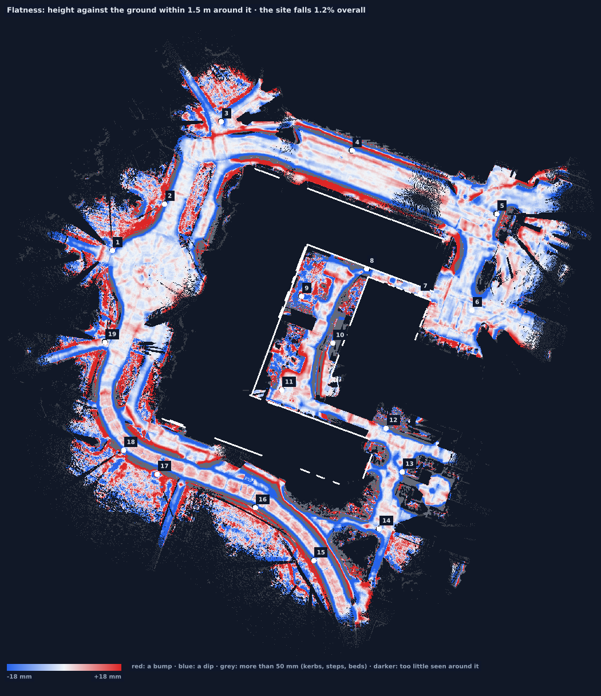
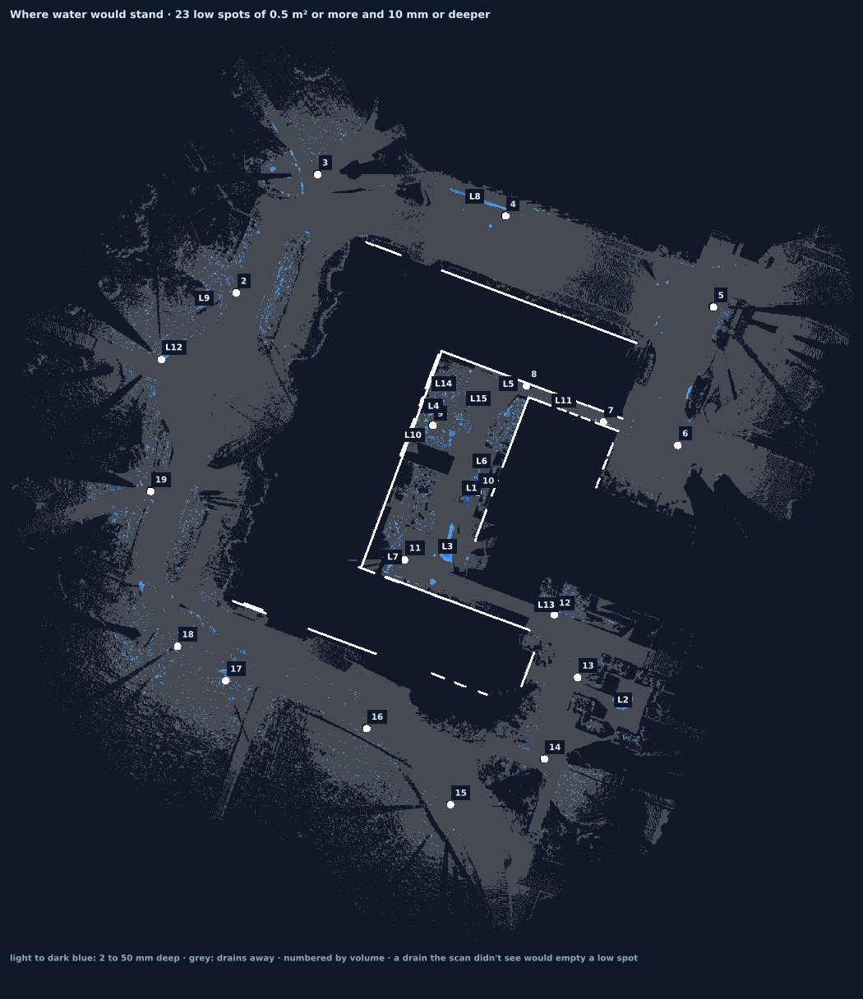
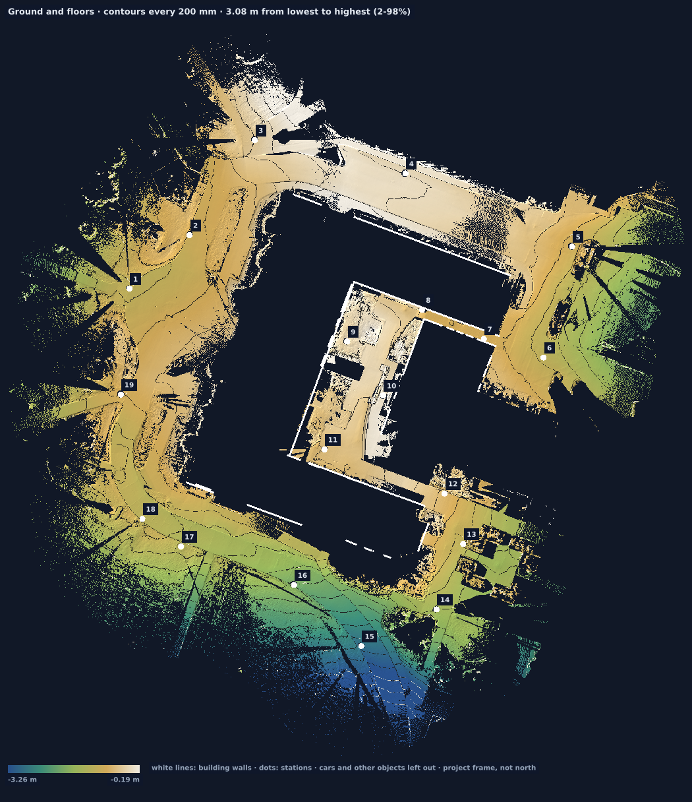

Roads, ruts, and standing water
Where will water stand in this lot?
The administration building at the University of Idaho. Crowns stand up, gutters sit down, and the low places are numbered.



Not every low spot is a puddle. The deepest here (L1, 203 mm) is a planting bed in the courtyard. The report lists each one with its position, so someone can check it on site.
What you get
The three maps, and each low place with where it is. A later visit of the same ground shows what was cut or filled. The report for this building.
On site
Stations along the ground you care about. A car or a bin hides whatever is under it, and that patch stays blank.
Worth knowing
A drain the scan didn't see lets water out, and the map treats that gap as an outlet. Look at the drains. Where the job needs a surveyor's stamp, it still does.